展期：基本陈列（常设）
展厅：地下一层展厅
“古代中国陈列”是中国国家博物馆的基本陈列，它以王朝更替为主要脉络，分为远古时期、夏商西周时期、春秋战国时期、秦汉时期、三国两晋南北朝时期、隋唐五代时期、辽宋夏金元时期和明清时期八个部分。该陈列以古代珍贵文物为主要见证，较为全面地展示了古代中国不同历史时期在政治、经济、文化、社会生活以及中外交流等方面的发展状况，突出展现了中华文明绵延不绝的发展特点和各族人民共同缔造多民族国家的历史进程，展现了中华民族所取得的辉煌成就和对人类文明所做出的伟大贡献。
“古代中国陈列”是中国国家博物馆的基本陈列，它以王朝更替为主要脉络，分为远古时期、夏商西周时期、春秋战国时期、秦汉时期、三国两晋南北朝时期、隋唐五代时期、辽宋夏金元时期和明清时期八个部分。该陈列以古代珍贵文物为主要见证，较为全面地展示了古代中国不同历史时期在政治、经济、文化、社会生活以及中外交流等方面的发展状况，突出展现了中华文明绵延不绝的发展特点和各族人民共同缔造多民族国家的历史进程，展现了中华民族所取得的辉煌成就和对人类文明所做出的伟大贡献。
-

- 2011年5月16日上午，我馆在西大厅隆重举行了《古代中国》基本陈列预展仪式。《古代中国》基本陈列是我馆新馆竣工、重新开放后最重要的基本陈列之一，它的前身是《中国通史陈列》。
-
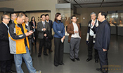
我馆举办“网络文化名人游国博”活动 2013年12月2日，我馆与国务院信息化办公室合作举办了“网络文化名人游国博”活动，网络文化名人自由参观具有国博特色反映博大精深的中华传统文化和世界文明成果的各类陈列展览。
-
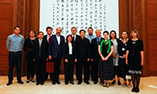
中东欧国家博物馆馆长访问我馆 2013年9月22日，来华考察的中东欧地区12个国家的国家级博物馆馆长来到我馆参观，并与我馆馆长吕章申、党委书记兼副馆长黄振春会谈。馆长们首先参观了我馆基本陈列“古代中国”展览。
-
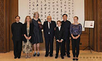
美国前国务卿基辛格访问我馆 2013年6月27日，美国前国务卿基辛格博士及家人一行来到我馆，参观了我馆“复兴之路”基本陈列。我馆馆长吕章申会见了基辛格博士一行。党委书记、副馆长黄振春陪同参观。吕章申馆长向基辛格博士赠送了“古代中国”基本陈列图录《中华文明》。
-
 我馆馆长会见意大利文化遗产与活动部部长 2012年7月6日，在由我馆与意大利文化遗产与活动部文化遗产开发司联合举办的“佛罗伦萨与文艺复兴：名家名作”展开幕之际，我馆馆长吕章申在我馆会见了意大利文化遗产与活动部部长洛伦佐·奥尔纳基。
我馆馆长会见意大利文化遗产与活动部部长 2012年7月6日，在由我馆与意大利文化遗产与活动部文化遗产开发司联合举办的“佛罗伦萨与文艺复兴：名家名作”展开幕之际，我馆馆长吕章申在我馆会见了意大利文化遗产与活动部部长洛伦佐·奥尔纳基。
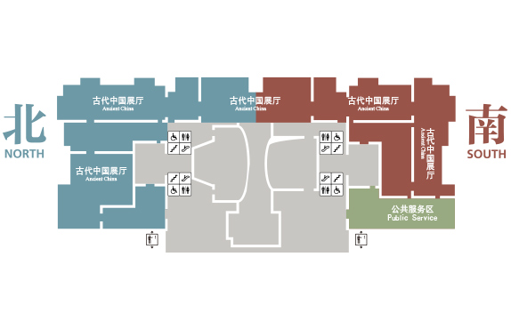
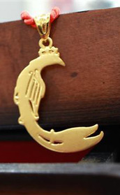
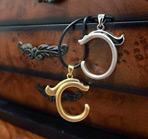
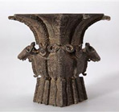
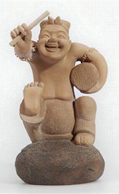
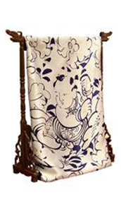
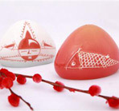
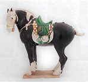
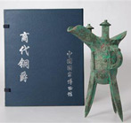